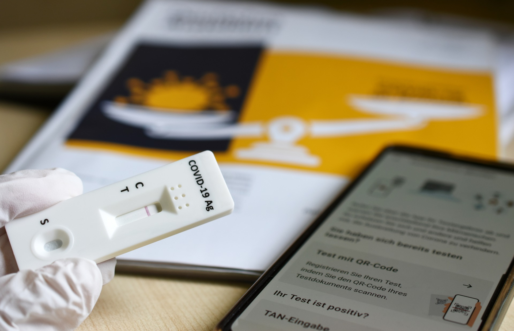
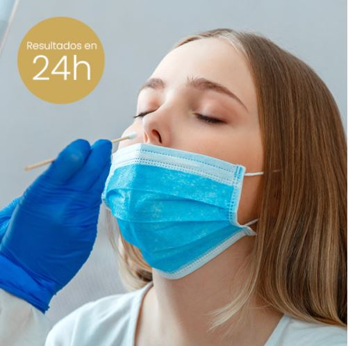
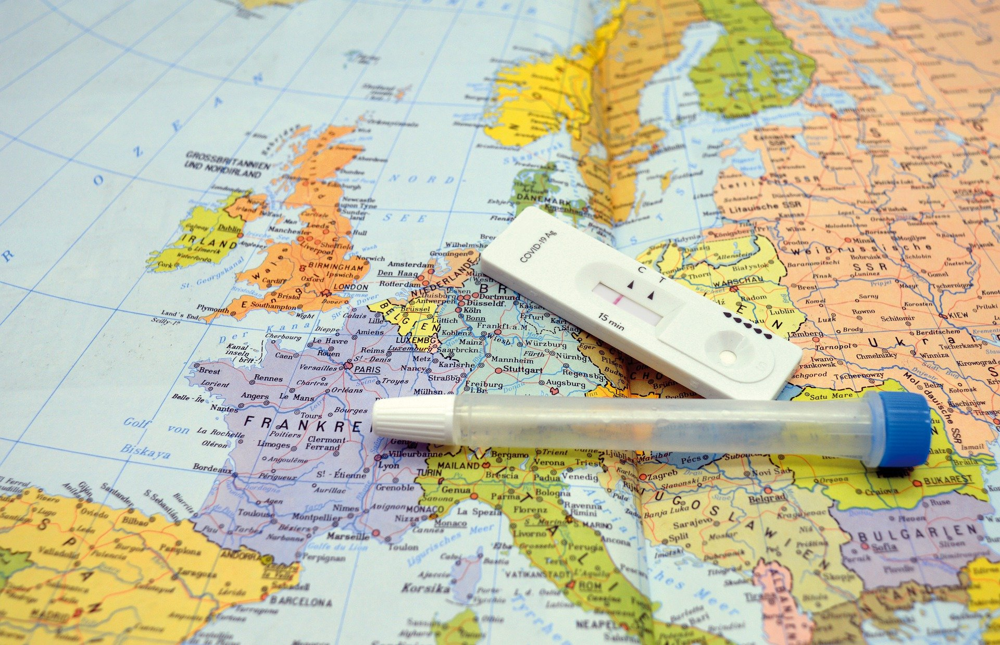

MISION: Somos una empresa hecha para satisfacer las necesidades de nuestros clientes.con gentileza, seriedad y cumplimiento en todo momento.
VISION: ser la empresa número uno en cálidad y cumplimiento quien genere la mayor confianza y seguridad para la ocupación de nuestros servicios.
Prueba de antigenos
Prueba por hisopado nasofaríngeo pruebamolecular RT-PCR, esta prueba tiene mayor sensibilidad y especificada. Recomendada por la ORGANIZACION MUNDIAL DE LA SALUD (OMS).

Prueba PCR
Prueba rapida de hisopado nasofaríngeo con la efectividad de un 98%, detecta la proteína del virus SARS-Cov-2, el resultado se carga a SISMUESTRAS en 2 horas.
El resultado se dara en 15 minutos.
Certificados validos a nivel nacional e internacional.

Sin moverte de tu casa un profesional de la salud estara en tu domicilio en menos de 24 horas.

Sabras si tienes el virus activo o no.

El cerfiticado lo enviamos al E-mail que nos indiques en español e ingles.